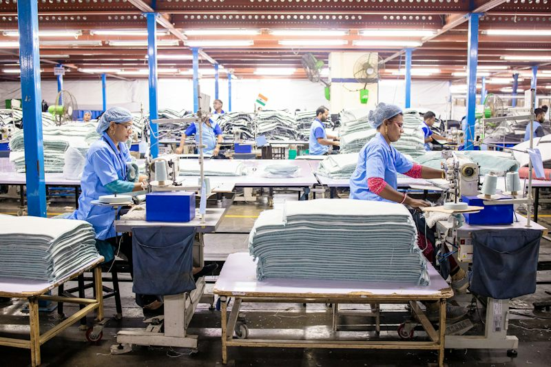
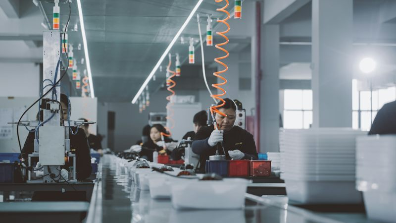
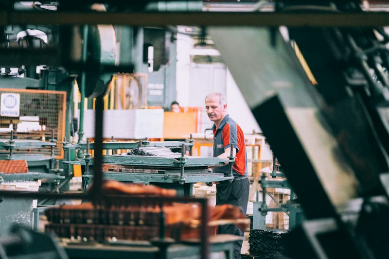

Teacher · Session card (Ficha de Sesión)
| Campo | Valor |
|---|---|
| Nivel / MCER | Intermedio 2 · GT English Path Nivel 08 · B1.2 · modo Interacción + Mediación (SPK-06) · online grupo / 1:1 |
| Bloque | 2 · PROCESS · sesión 9 de 32 · contexto V (vida cotidiana, con un caso de trabajo en lectura, listening y misión) · SINGLE_TOPIC |
| Objetivo | Explicar cómo funciona algo cotidiano (café, app del banco, empaque, una planta pequeña) con pasos de rutina, y pasar un mensaje a otra persona en inglés simple. |
| Punto de lengua (uno) | Pasiva en presente para pasos de rutina: It is checked before delivery. The coffee is roasted every day. Solo is/are + participio, frases cortas: afirmativo, negativo (is not / are not) y pregunta (Is it …? Are they …?). Participios irregulares solo made, sent, kept. |
| Límite | Sin agente complejo (by + persona), sin otros tiempos pasivos (ni pasado ni will be ni is being), sin pasiva con modales, sin present perfect continuous, 2º/3º condicional, reported questions, relativas complejas, have got. |
| Léxico nuevo (11) | check · test · pack · store · clean · deliver · inspect · label · step · routine · batch |
| Reciclaje S01–S06 (visible, ≥8) | status · pending · confirm · update · delay (S01) · shipment · supplier · deliver (S02) · approve · receive (S05) · make sure (S06) · schedule (S03). Aparecen en calentamiento, lectura, listening, preguntas y misión. |
| Dinámicas (4 familias) | VOC-12 Rank the Register (RANKING) · GRM-07 Roulette Drill (CONTRARRELOJ, ruleta de rueda + dado; 2ª vez en el nivel: S03 usó tambores) · SPK-06 The Interpreter (OCULTAMIENTO, mediación) · LIS-03 Two Versions (IMPOSTOR, 2ª vez: S01 fue Sofía/Dev; aquí hoja de auditoría de línea) |
| Riesgo / temperatura | Seguro · Engaging (desacuerdo ligero: “la rutina da seguridad” vs “la rutina apaga el pensamiento”; casos ficticios; sin temas personales sensibles) |
| Evidencia | Misión “The Tour Guide”: 3 casos × 5 movimientos (15), éxito ≥12/15 sin leer, con ≥1 oración negativa y ≥1 pregunta Is it…? por caso; puntaje de B en SPK-06. |
Warm-up · Follow the Box

Every product follows a path.Something you use every day is made, checked and sent along a path. Choose a belt and send the box through the stations.
“A good routine keeps everybody safe.” — or — “A routine makes people stop thinking.”
Teacher notes · §1 Warm-up
Pedagógica
- Propósito: exposición a la pasiva en presente SIN explicarla (las frases de las estaciones son input). El alumno habla desde el minuto 1 con sus propias palabras; no corrijas.
- Flujo (4 min): 1 min elige una banda y mueve la caja (≥2 bandas), 2 min dice el recorrido, 1 min opina sobre el gancho (rutina segura vs rutina que apaga el pensamiento).
- Recicla: status, pending, confirmed (banco), shipment (empaque), delay (pregunta de seguimiento). Si dice una estación en activa (“they clean the cups”), acéptalo y repite el modelo pasivo sin marcar el error.
Engagement
- La caja que avanza da sensación de “producción”: pide que el alumno la mueva él mismo.
- Grupo: cada persona elige una banda distinta y las comparan. 1:1: elige tú la banda “banco” y deja que él elija otra.
Crecimiento
- Anota qué banda eligió: es su zona de confort léxica. En la Misión comparará su recorrido de hoy con el de la última sesión.
- Venta/mejora: “explicar cómo funciona algo” es la habilidad detrás de inducciones, auditorías y visitas de clientes; en Intermedio 2 la practicamos con rutinas reales de su planta.
- Progreso visible: en S01 explicaba un cambio; hoy explica un proceso.
Vocabulary · Rank the Register
Eleven words from the line
Tap a word, listen, and say the example after the voice. Every example uses the same pattern you will practise today.
Six ways to say the same thing
Teacher notes · §2 Vocabulary
Pedagógica
- Parte A (2 min): el alumno escucha y repite 11 palabras con un ejemplo en pasiva (el patrón de hoy entra por el léxico). Pide que diga la oración, no solo la palabra.
- Parte B VOC-12 (6 min): 3 sets × 6 oraciones. Eje: informal → formal. Orden experto = el de la lista tras bloquear; pistas: imperativo y “Yes or no?” (informal), oración completa / “please” / “I think” (neutral), “Could you…”, “I would like to…”, “I am happy to say” (formal).
- Puntaje: 1 punto por oración en el grupo correcto (informal/neutral/formal) + 1 punto por cada “I said it” (defender el orden, razón top/bottom, quién recibe cuál). Es producción, no velocidad.
- Elecciones razonables (no hay respuesta única): jefe = neutral (3–4); proveedor = 4–5; auditor = 6. Pide siempre “because…”. Cierre: “My boss gets number __ because __.”
- 1:1: tú discrepas UNA vez (“Why not number 4?”) para que defienda. Grupo: deben llegar a un orden único antes de bloquear.
Engagement
- Reto: “¿Con quién nunca dirías la número 1?”. Cada grupo decide qué frase prohibe en una auditoría.
- Si el alumno bloquea con 6/6 en grupo correcto, pídele que invente una séptima frase más formal.
Crecimiento
- Venta/mejora: el registro es lo que más cambia cómo te percibe un cliente o auditor; muchos alumnos suenan “bruscos” sin querer. Ofrece un taller de correos y llamadas formales.
- Progreso: en S01 elegía palabras; hoy elige tono. Anota qué set le costó más (fuente de práctica 1:1).
- Léxico nuevo reaparece en lectura, listening, speaking y misión (11/11).
Grammar · The Line Speaks
Tap the pins on the line

Tap a pin on the photo.
What is the same in every sentence?
Three things to know
1 · Form
cleaned · checked · packed · stored · made · sent · kept
2 · Use
We use it for routine steps when the step is more important than who does it.
3 · Shapes
It is checked. · It is not checked. · Is it checked? — Yes, it is. / No, it isn’t.
Is, are, or neither?
Spin, say it, keep the streak
Explain a belt to a new colleague
Choose a thing from your own life or work. Explain how it works: 3 steps · 1 negative · 1 question to your partner (“Is it checked?”).
Teacher notes · §3 Grammar
Pedagógica
- Un solo punto: pasiva en presente (is/are + participio) para rutinas. Explicación ≤5 min en total: Notice (2) + Tool (2) + 1 min de modelo. NO enseñes agente (by + persona), pasado ni futuro pasivo. “by hand / by machine” solo como frase hecha si aparece.
- Notice: 4 pines sobre la foto; “key words” marca is/are + participio. Pregunta guía: “¿Quién hace la acción? ¿Importa?” (no importa: importa el paso).
- Sentence Machine: el alumno elige y lee en voz alta; irregulares solo made / sent / kept. Pregunta: Is it …? → Yes, it is. / No, it isn’t.
- Práctica A (mecánica, 2 min) + giros 1–3 de la ruleta con marco visible (≈1 min) = ≤3 min mecánicos de 12 (límite ≤1/3). Giros 4–8 sin marco: Meaningful/Comunicativa.
- GRM-07 (CONTRARRELOJ): la ruleta define cosa+paso, forma (+ / − / ?) y a quién se lo dices. Juez (tú o el compañero): ✓ oración limpia +1, ★ con detalle (cuándo/dónde) +2, ✗ resbalón corta la racha. El reloj de 20 s solo mantiene ritmo: NUNCA da puntos. Cierre en voz alta: “I finish with __ points. My longest streak was __. My hardest shape was __.”
- Variante de la S03: misma mecánica, otra imagen (rueda + dado) y contenido (rutinas, no comparativos).
- Errores esperables: “is clean” (adjetivo) vs “is cleaned”; “are check”; “The boxes is…”; falta de “not”; orden de pregunta. Corrige 2–3 como máximo, después de cada giro.
Engagement
- El sonido de la rueda lo hace el alumno: “¡Gira!”. En grupo, el juez rota cada giro. La racha se “protege”: pueden pedir una pista (pierden el ★ de ese giro).
- Meta de equipo: 10 puntos en 8 giros. Si alcanza 12, reta con “ahora dilo con ‘not’ en todos”.
Crecimiento
- Venta/mejora: la pasiva de rutina es el inglés de inducciones, auditorías y manuales (“It is checked before delivery”). Muestra una SOP real de su planta y pídele que la lea en inglés.
- Progreso: S05 = pasado de un problema (“was sent”); S09 = rutina de hoy (“is sent”). S13 retoma responsabilidad con “It is handled by…”.
- Guarda su racha máxima para comparar en S13 y en el Checkpoint 2 (S16).
Reading · Three Signs
Six questions
Teacher notes · §4 Reading
Pedagógica
- 3 tarjetas ≤60 palabras (47 / 45 / 44): panadería (vida diaria), mensaje de la app del banco (vida diaria), aviso de planta (trabajo). El mismo patrón en tres contextos.
- “Find the steps” resalta is/are + participio: úsalo después de las preguntas, no antes.
- Recicla: status, pending, delay, update, confirm (banco), shipment, supplier, approval (planta).
- Respuestas: 1 before seven · 2 False · 3 pending · 4 An update is sent by email · 5 after approval · 6 at seven.
Engagement
- Reto de 30 s: “¿Qué línea es la más importante del aviso? Defiéndela.”
Crecimiento
- Venta/mejora: pide que traiga un aviso real de su trabajo para S10 (Step by Step). Material auténtico = mejor retención.
Listening · Two Versions of the Line
A new worker asks two people how the juice line works.
Emma and Kenji describe the same line. They agree on most things — but three facts are different. One version matches the official station sheet. The other is the impostor.
Audio: recorded files play when available; otherwise your browser’s voice reads the text.
What are they talking about?
What did each person say?
Listen again. For each row, choose what Emma (A) said and what Kenji (B) said. Then open the official sheet.
- Bottles cleaned at 6:00
- Juice tested before filling · every bottle labeled
- Boxes checked twice before storage · kept in the cold room
- Orders delivered Tuesday and Friday, before 12:00
- Batch not approved = not sent
Which version holds better, and why?
Version A · Emma (74 words):
Version B · Kenji (70 words):
Answer key. Task 1: how a juice line works. Task 2: cleaned A six / B seven · checked A twice / B three times · delivered A Tuesday and Friday / B Monday and Thursday. Task 3: Version A (it matches the sheet in all three facts).
Teacher notes · §5 Listening
Pedagógica
- LIS-03 (IMPOSTOR): dos versiones del mismo proceso, TRES discrepancias de hecho (hora de limpieza, número de revisiones, días de entrega). Lo demás es igual (almacén frío, regla de aprobación). Guion literal 144 palabras en total (74 + 70), 2 hablantes; Kenji con acento japonés (no nativo).
- Flujo (7 min): 1 min escena + gist · 2 min escuchan A y B (una vez cada una, repetir B si hace falta) · 2 min tabla de auditoría (6 elecciones) · 1 min hoja oficial y decisión · 1 min cierre. Si hay prisa, omite la lectura del guion.
- Language focus (pasiva en presente) aparece >10 veces sin subrayar; léxico: cleaned, tested, labeled, checked, stored, delivered, batch, approved, pending, confirms.
- Respuestas: A: six · twice · Tuesday and Friday. B: seven · three times · Monday and Thursday. Veredicto: A (coincide en los tres hechos).
- Cierre en voz alta: “We found three differences. Version A holds better because ___.”
- Estado de audio: scripts listos, audio pendiente (2 clips). Mientras tanto la página usa la voz del navegador con aviso visible.
Engagement
- Plantea: “Uno de los dos es el impostor. ¿Quién?” y no reveles la hoja hasta que decidan.
- Grupo: cada mitad defiende una versión y el resto vota con la hoja oficial.
Crecimiento
- Venta/mejora: detectar diferencias entre dos versiones es lo que hacen los auditores y los supervisores. Conecta con S16 (Checkpoint 2, LIS-03 otra vez).
- Progreso: S01 comparaba horarios; hoy compara pasos de proceso con más léxico técnico y acento no nativo.
Speaking · The Interpreter
After each relay, ask and answer
★ = two follow-upsTeacher notes · §6 Speaking
Pedagógica
- SPK-06 The Interpreter (OCULTAMIENTO, MCER Mediación): A = visitante (clip o lectura), B = no entiende A, C = mediador. El mensaje de A se muestra solo 20 s a C y luego se cubre: C habla sin notas (30 s de preparación en silencio como máximo). B marca el tablero SOLO con lo que C le dice. El punto es el resultado de B, no la fidelidad de C.
- Tablero: R1 café (4 selecciones), R2 app del banco (4 selecciones), R3 línea de planta (5 estaciones). Máximo 13 puntos de equipo.
- Distribución (12 min): 3 rondas × 4 min = relevo (1.5) + tablero (0.5) + 2 preguntas del mazo (2). Las 14 tarjetas son un banco: R1 1–5, R2 6–9, R3 10–14; elige las ★ si el tiempo aprieta (10 de 14 llevan 2 follow-ups).
- C no puede leer el guion. “Simple English”: frases cortas, repetir números, comprobar (“Do you understand?”). Si C dice “is cleaned” bien, no corrijas; corrige solo si B no pudo actuar.
- Modo grupo: tríos y rotación A→B→C. Modo 1:1: el clip es A, el alumno C, tú B (finge no entender y haz 1 pregunta de aclaración: “Where?”, “When?”).
- Cierre: “Our team finishes with __ points. The hardest message was __ because __.”
- Audio: 3 clips del visitante (scripts listos, audio pendiente).
Engagement
- Dramatiza: B se tapa los oídos (o apaga el audio) mientras suena A. Un tablero que se “ilumina” al acertar motiva sin velocidad.
- Reto bonus: C pasa el mensaje de R3 sin repetir “is/are” más de dos veces (usa “first, second, last” solo si lo necesita; es S10).
Crecimiento
- Venta/mejora: la mediación es el diferencial GT: el alumno industrial la hace a diario (pasar instrucciones a compañeros o proveedores). Pregunta: “¿Cuándo tuviste que traducir una instrucción en tu planta?”. Es el gancho para ofrecer un módulo de comunicación con proveedores.
- Progreso: guarda el puntaje del equipo (de 13) para el Checkpoint 2 (S16), que pide explicar un proceso y aclarar una duda.
Mission · The Tour Guide

Show a visitor how it works
You are the guide. For each case, tap the stations on the belt as you speak, then complete five moves: 1 name it · 2 step one · 3 step two · 4 a NOT sentence · 5 answer the visitor’s question (“Is it …?”). Ninety seconds per case. No reading.
Group: A guides, B plays the visitor and asks the question, then swap.1:1: you guide; the teacher is the visitor and asks the question.
Moves completed: 0 / 15
Success: at least 12 of 15 moves, no reading, one NOT sentence and one “Is it…?” answer in every case.
Teacher notes · §7 Mission
Pedagógica
- Producto de evidencia: el alumno explica un proceso (cómo funciona algo) a un visitante. 3 casos: (1) café, (2) transferencia del banco, (3) línea de planta (trabajo). 15 movimientos; éxito ≥12/15 SIN leer y con ≥1 oración negativa y ≥1 respuesta Is it…? en cada caso.
- El alumno toca las estaciones de la banda mientras habla (apoyo visual, no guion). Si usa “first / then” libremente, déjalo; la secuenciación se enseña en S10.
- Movimiento 5: tú (visitante) preguntas: C1 “Is the milk stored in the fridge?” · C2 “Is the money received at once?” · C3 “Are the parts tested before packing?”. Respuesta modelo: “Yes, it is. / No, it isn’t. It is …”.
- Evidencia a guardar: 1 minuto del caso 3 explicado completo.
Engagement
- “Tour badge”: anuncia “__ of 15 moves”. Los puntos de la ruleta compran +30 s.
Crecimiento
- Venta/mejora: “Este es el formato de una visita guiada, una auditoría o una inducción: lo usarás con clientes y con gente nueva.” Ofrece un programa 1:1 con SOP reales de su área.
- Progreso visible: S01 = explicaba un cambio; S06 = anticipaba con Plan B; S09 = explica un proceso paso a paso. Compara con el Checkpoint 2.
Wrap-up · Quality Check
✓ Success
↑ Upgrade
✎ Repair
↻ 2nd try
Repeat Case 3 with the visitor’s question. Use the upgrades. Same process, better English.
60 seconds · 5 questions — say the answer before you click
Finish these sentences
“Today I explained how works.”
“One step is and one step is .”
“To sound formal, I say .”
I can…
You can explain how it works: it is checked, it is packed, it is delivered.
Homework: choose ONE routine at home or at work and write 4 lines about it (2 steps with is / are + participle · 1 negative · 1 question “Is it …?”). Bring it to Session 10. Next: Session 10 · Step by Step
Teacher notes · §8 Wrap-up
Pedagógica
- Success → Upgrade → Repair → 2º intento (máx. 2 aciertos y 3 correcciones de alto valor: is/are con sujeto plural, participio vs adjetivo, “not”). Segundo intento del caso 3.
- Exit quiz: respuesta en voz alta ANTES de hacer clic. Respuestas: are packed · is checked · Is it checked · not delivered (aren’t) · Could you check…
- Close-out en voz alta (las 4 frases). Registra: puntos de VOC-12 (de 27), racha máxima de GRM-07, aciertos de B en SPK-06 (de 13), versión elegida en LIS-03, movimientos de la misión (de 15).
Engagement
- “Minute 1: you followed a box. Minute 58: you guided a visitor through a process.”
Crecimiento
- La tarea de 4 líneas es la materia prima de S10 (conectores de secuencia: first, then, after that). Pide una rutina REAL de su trabajo.
- Venta/mejora: ofrece 1:1 para convertir una SOP real en una explicación de 2 minutos en inglés (inducción, auditoría, visita de cliente).